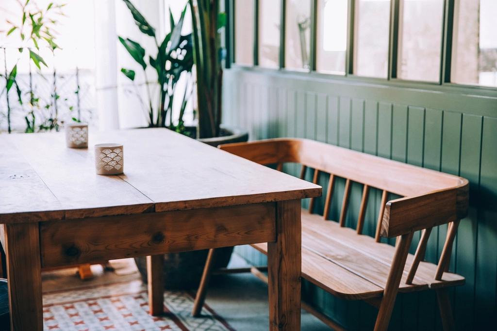
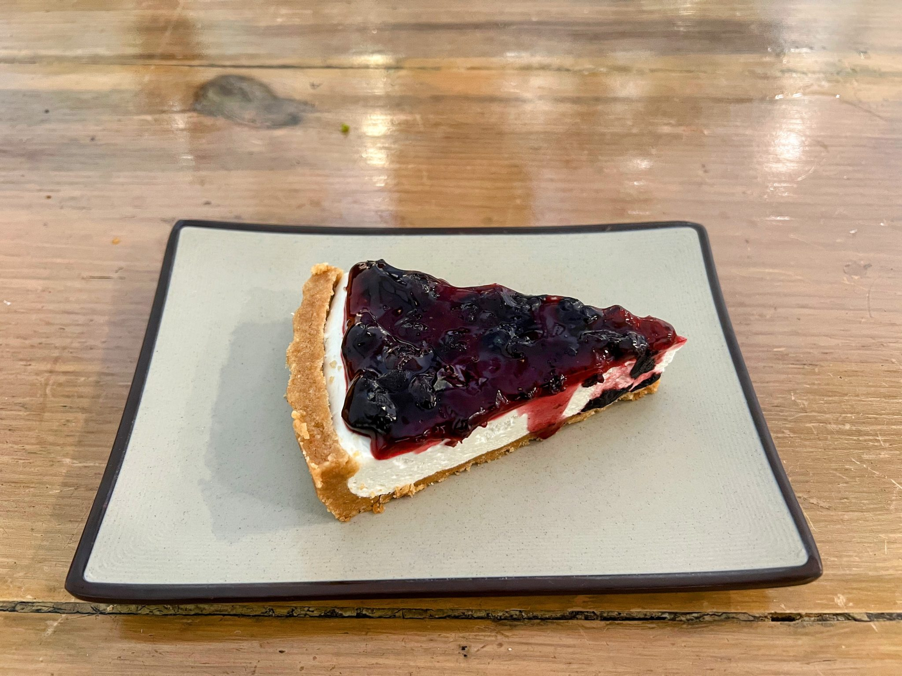
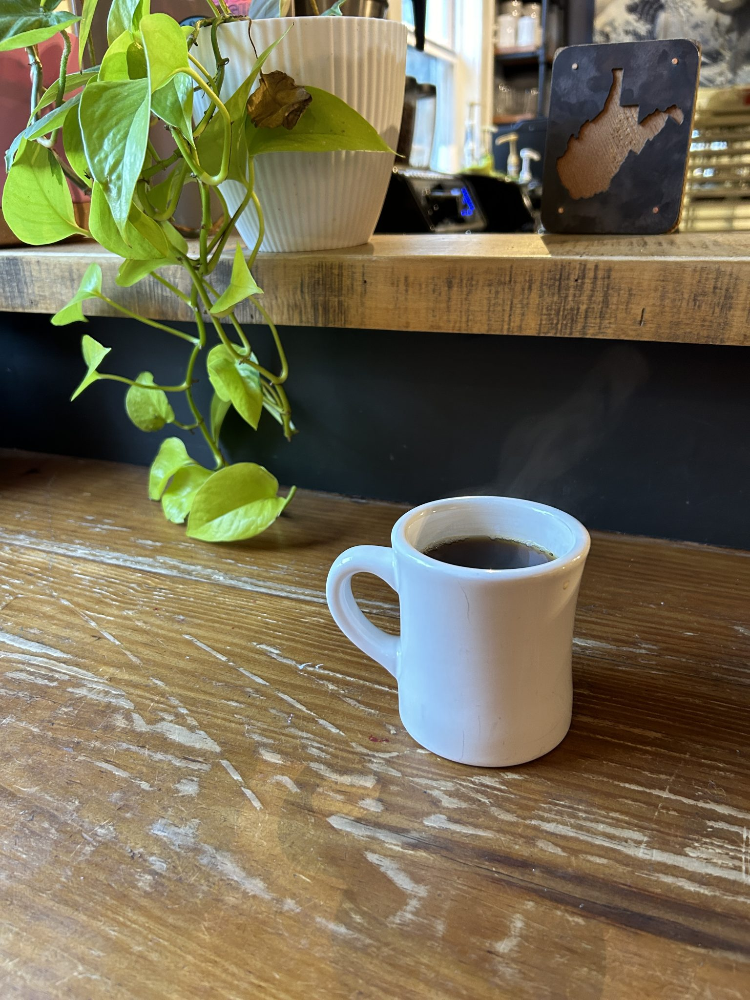

Googleマップを見ていてオシャレなカフェがあるのを見つけ行ってみました。 落ち着いた雰囲気であり、綺麗な内装でとても過ごしやすかったです。 バスクチーズケーキとホットラテを頂きました チーズケーキはしっとり固めであり、味もとても美味しかったです。 また、ホットラテもミルク感が強すぎずコーヒーの味わいも楽しめるちょうどいいバランスだなと感じました。 ラテアートもとても綺麗にされていて、提供された時に気分が上がる、そんなお店でした。




Voice
お客様の声
Googleマップに実際に寄せられたクチコミを、良い評価・ご指摘のお声も含めて全てご紹介します。
白を基調とした明るく清潔感を感じるお店です 訪れた当日の"本日の珈琲"はグアテマラ。メジャーな珈琲です 薫りは確かにグアテマラ しかし特有のコク、苦味が弱かったです フレンチトーストは牛乳が多すぎビチャビチャでした
開放感のあるオシャレな内装のお店でした。 バスクチーズケーキとカフェラテを注文、ラテアート始めてで内心興奮☕️ ケーキも美味しかったです🍰
インスタを拝見し1人ランチで利用させていただきました。大きな窓ガラスにウッド調の可愛らしいお店ですぐに分かりました。インスタで紹介されていたケーキも食べたかったのですが、今回はクロックムッシュとアイスコーヒーをいただきました！食べ応えのある厚みのあるパンにとろとろチーズがたっぷり乗っており大満足でした🤤アイスコーヒーとの相性もピッタリで大変美味しくいただきました。 静かで雰囲気のある空間に癒されました🌿次回はチーズケーキを食べにまた伺います！
Instagramで拝見し、足利に新しいカフェができたことを知り、訪問してきました。 季節のチーズケーキ、アイスカフェラテをいただきました。外は暑かったですが、店内は快適でした。注文してから5分と経たずして注文したものが提供してもらいました。季節のチーズケーキはマンゴーチーズケーキとレモンチーズケーキの2層になっており、さっぱりといただけました。アイスカフェラテも美味しかったです。足利の観光地から気持ち少し離れておりますので、ゆったり過ごせそうでした。 ご馳走様でした。